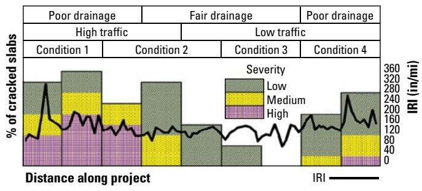

Pavement Management
Pavement management is a systematic discipline that plans, designs, constructs, and maintains roadway networks to achieve defined performance goals throughout their service life. The approach integrates condition monitoring, traffic data, environmental factors, and predictive modeling to prioritize maintenance actions and allocate resources efficiently across the network [1] [2] [3]. It relies on regular inspections and nondestructive testing to evaluate structural capacity, surface roughness, and distress levels, using these metrics to predict future performance and guide decision-making [4] [2]. Central to the framework is the recognition that pavement behavior depends on the interaction of all structural layers, from subgrade support to surface smoothness, which collectively determine durability and safety [1] [3].
Pavement Management unifies the technical and operational disciplines required to maintain infrastructure performance over time. Pavement Systems provides the structural framework of layered components that must be systematically monitored and maintained to ensure long-term durability and safety under traffic loads. Subgrade Insights enables this oversight by providing critical data on foundational soil stability and support capacity to ensure long-term pavement durability. Excavation Safety ensures the structural integrity and stability of pavement foundations by preventing subsurface collapses and ground failures during earthwork operations. Pavement Smoothness serves as a critical performance metric within Pavement Management by quantifying ride quality and structural integrity to guide maintenance prioritization and ensure long-term durability. Slab Jacking serves as a critical maintenance intervention within Pavement Management by actively restoring structural integrity and elevation to settled concrete slabs, thereby ensuring long-term durability and safety.
Sources (4)
Sub-concepts (5)
Key findings
- Found that uniform subgrade support is more critical to long-term durability than sheer strength, as abrupt variations in support create localized stress concentrations that accelerate fatigue cracking and premature distress [1].
- Demonstrated that a reduction in concrete slab thickness by one inch can decrease pavement service life by approximately fifty percent, highlighting the dominant role of slab depth in structural longevity [1].
- Observed that granular subbase layers provide superior stiffness, strength, and drainage—often yielding smoother rides—but represent the most expensive option, requiring managers to weigh these performance gains against higher initial costs [3].
- Measured that increasing the thickness of base or drainable layers enhances durability and reduces clogging in areas with shallow water tables, but does not accelerate drainage rates, necessitating a trade-off between service life and initial outlay [3].
- Identified that effective pavement management requires treating the health of the support system as the primary concern, prioritizing proper subgrade preparation, compaction, and early treatment of expansive soils to prevent soil pumping [1].
- Reported a fundamental tension in airport pavement management between mandatory destructive core testing for acceptance and the operational need for faster, non-destructive thickness verification methods like magnetic imaging or total-station surveys [4].
- Showed that mapping maximum pavement deflection along stationing is essential for identifying support uniformity issues, allowing managers to isolate subsections affected by moisture problems or cut-and-fill irregularities for precise interventions [2].
- Revealed that the field currently suffers from inconsistent testing practices and absent industry standards for straightedge execution and vertical edge assessment, despite the emergence of non-destructive measurement technologies [4].
Systemic Management & Strategic Planning
Evidence: 3 reports (3 primary)
Pavement management is a systematic framework that integrates condition monitoring, traffic data, and predictive modeling to plan and maintain roadway networks throughout their service life [1]. The approach recognizes that pavement behavior depends on the interaction of all structural layers, requiring managers to evaluate subgrade support, base systems, and surface conditions together to ensure durability and safety [3]. By continuously analyzing key performance indicators such as roughness, distress levels, and structural capacity, agencies can predict future performance and prioritize preservation or rehabilitation treatments to allocate limited resources efficiently [1].
Research problem — Agencies struggle to achieve uniformly stable subgrade support due to inherent soil variability and moisture-related volume changes, creating a complex trade-off between necessary stabilization techniques and the associated costs, schedule impacts, and drainage preservation [1]. The absence of an integrated quality-control regime for verifying base course geometry and material conditions leads to inconsistent measurements and propagated errors that compromise pavement smoothness, safety, and maintenance planning accuracy [4]. Systemic joint deterioration driven by inadequate drainage and non-uniform subgrade support causes premature structural failure and inflated lifecycle costs, highlighting the need for holistic management strategies that address these interconnected degradation mechanisms [3].
The following figure illustrates corner cracking in jointed concrete pavement, a common manifestation of the systemic deterioration described above.
 Corner cracking in jointed concrete pavement [1]
Corner cracking in jointed concrete pavement [1]
The image displays a section of rigid pavement characterized by intersecting joints and significant structural distress. Visible cracks radiate from the corners where slabs meet, indicating failure at these specific locations. This type of distress highlights the importance of uniform support and load transfer in pavement management systems to prevent premature deterioration.
State of the art — Modern pavement management treats the structure as an integrated system where subgrade stability, drainage capacity, and surface performance are given equal design priority to ensure long-term bearing strength and ride quality [3]. The field has converged on a data-driven workflow that integrates early-stage subgrade diagnostics with continuous intelligent-compaction monitoring and automated machine control to identify risks before construction and maintain design tolerances throughout the project lifecycle [1]. Current practice balances regulatory compliance and safety-critical precision against operational efficiency by transitioning from legacy manual inspections toward non-contact laser profiling and real-time smoothness sensors that enable immediate corrective actions while retaining mandatory destructive testing for thickness verification [4].
Findings from the reports
- Demonstrated that uniform subgrade support is more critical to pavement longevity than sheer strength, as abrupt variations create localized stress concentrations that accelerate fatigue cracking and premature distress [1].
- Revealed a significant cost-performance trade-off where granular subbase layers provide superior stiffness, strength, and drainage but represent the most expensive option, requiring managers to weigh higher initial outlays against longer service life [3].
- Showed that increasing base or drainable layer thickness enhances durability and reduces clogging in areas with shallow water tables, but does not accelerate drainage rates, necessitating a balance between structural stability and drainage emphasis [3].
- Established that even minor reductions in concrete slab thickness can drastically cut service life, highlighting the dominance of slab dimensions as a durability factor alongside foundation uniformity [1].
- Identified a fundamental tension between regulatory compliance and operational efficiency, where mandatory destructive core testing remains the acceptance baseline despite the availability of faster non-destructive alternatives like magnetic imaging or total-station surveys [4].
- Observed that while laser profiling offers rapid surface data, its adoption is limited by existing specifications that still require manual straightedge checks and lack uniform procedural standards for non-destructive methods [4].
- Highlighted a knowledge gap regarding the structural impacts of edge slump, noting that current management focus prioritizes water-related safety hazards like ponding and hydroplaning over potential structural degradation from vertical irregularities [4].
Novelty & rigor — The research introduces a unified, measurement-driven framework that integrates previously disparate quality-control practices into a single workflow spanning from subgrade preparation to post-pavement verification [4]. This approach replaces ad-hoc visual inspections with repeatable, specification-based data by formalizing testing standards for horizontal straightedge measurements and vertical edge assessments where no prior agency standards existed [4]. Reproducibility is ensured through a disciplined sequence that ties together subgrade characterization, structural support quantification, base construction, concrete performance testing, and surface smoothness verification using standardized material selections and test methods [1] [4].
Reported values
| Parameter | Value | Context | Source |
|---|---|---|---|
| maximum allowable thickness deviation | 0.5 in. | slab thickness tolerance (thinner than specified) | [1] |
| minimum density for untreated bases | 105 percent | ASTM D698/AASHTO T 99 for heavily traveled projects | [1] |
| service life reduction | 50 percent | reduction in concrete slab thickness by an inch | [1] |
| thickness measurement accuracy | 0.1 in. | for a concrete pavement 12.9 in. thick | [1] |
Across the reviewed reports, effective pavement management is fundamentally defined by navigating complex trade-offs between structural durability, performance metrics, and operational constraints. While strategic planning prioritizes uniform subgrade support to prevent premature distress and recognizes that minor reductions in slab thickness can drastically reduce service life, it simultaneously requires balancing these structural needs against the high costs of granular layers or the accelerated drainage benefits they provide. Furthermore, management strategies must reconcile the tension between rigorous regulatory compliance and operational efficiency, as agencies struggle to integrate rapid non-destructive testing technologies into acceptance protocols that still rely on arduous manual verification methods. [1] [4] [3]
Implications — Pavement management must shift from treating material selection as a simple cost item to viewing it as a strategic, life-cycle decision that justifies higher upfront investments in granular subbases through expected reductions in long-term maintenance and construction delays [3]. Agencies must abandon isolated preservation techniques in favor of a system-wide view where the support structure is the dominant determinant of performance, requiring rigorous quality control of foundation layers and proactive monitoring to prevent embedded defects [1]. Programs need to evolve from fragmented, labor-intensive practices toward an integrated framework that reconciles mandatory verification requirements with modern nondestructive technologies while establishing standardized protocols for surface evenness to mitigate operational safety risks [4].
Limitations — Management plans face residual uncertainty because diagnostic practices for subgrade conditions rely on simple index tests that fail to capture the influence of compaction moisture, density, or surcharge loads [1]. Verification of pavement thickness is constrained by regulatory reliance on sparse random coring data, as alternative non-destructive techniques are not accepted for official compliance [4]. Quality control outcomes remain inconsistent due to the absence of an industry-wide standard for straightedge testing and a lack of empirical studies linking edge irregularities to structural capacity [4].
The figure below illustrates non-destructive testing options that can be utilized for quality control of pavement thickness.
 A worker in high-visibility gear operates a non-destructive scanning device on a concrete surface. [4]
A worker in high-visibility gear operates a non-destructive scanning device on a concrete surface. [4]
The image shows an operator using the MIT-SCAN-T3 equipment to perform thickness testing by detecting distances between the scanner and buried metal plates. This non-destructive testing method provides accurate thickness measurements without damaging the surface.
Pavement Condition Assessment
Evidence: 2 reports (2 primary)
Research problem — Pavement managers lack dependable, network-wide information on the structural condition of concrete pavements, which prevents accurate prioritization of maintenance and prediction of remaining service life [2]. Translating surface deflection measurements into fundamental engineering parameters via back-calculation remains difficult due to challenges in obtaining reliable subsurface data on layer thicknesses, embedded steel, and hidden voids [2].
The following figure illustrates how center slab deflection varies along a project when normalized to a standard 9,000 lbf loading.
 Center slab deflection variation along a project normalized to a 9,000 lbf loading. [2]
Center slab deflection variation along a project normalized to a 9,000 lbf loading. [2]
The figure plots the normalized maximum deflection of pavement slabs against distance along the roadway, revealing significant spatial variability in structural response. This data is used to identify subsections where distress or poor moisture conditions may be adversely affecting the pavement. Such measurements are central to backcalculation methods that estimate fundamental engineering properties of the pavement structure.
State of the art — Ground-penetrating radar has become the standard non-destructive tool for large-scale pavement condition assessment, capable of quantifying layer thicknesses and detecting voids or reinforcement with accuracy comparable to core measurements [2]. Current practice balances survey speed against material discrimination by selecting between air-coupled antennas for highway-speed data collection and ground-coupled antennas for deeper penetration and finer resolution [2].
Findings from the reports
- Integrated inertial profiling and ground-penetrating radar provided a comprehensive diagnostic framework that linked surface roughness to hidden subsurface defects, such as voids and moisture issues [1] [2].
- Mapping maximum pavement deflection along project stationing revealed variations in support conditions that correlated with distress, drainage problems, and subgrade irregularities [2].
- Real-time smoothness monitoring behind the paver significantly shortened the feedback loop for material variability and equipment adjustments from days to hours [1].
- Power spectral density analysis identified dominant repeat wavelengths in pavement roughness, enabling managers to modify mix gradation or construction practices to eliminate specific sources of irregularity [1].
- GPR detection of underlying voids allowed agencies to prioritize repairs and evaluate the effectiveness of interventions by confirming conditions like free water beneath patches [2].
Novelty & rigor — Novelty lies in fusing surface-deflection profiling with high-speed ground-penetrating radar into a single workflow that overlays distress, drainage, and material data to isolate specific problem subsections for targeted preservation [2]. Reproducibility is ensured by adhering to documented acquisition protocols, standardized calibration procedures using core measurements, and established analytical methods for back-calculating structural parameters from deflection data [2].
The following figure illustrates the deflection measurement process using a Falling Weight Deflectometer (FWD) device, which is central to the structural parameter analysis described above.
 Schematic of a Falling Weight Deflectometer (FWD) device measuring pavement deflection. [2]
Schematic of a Falling Weight Deflectometer (FWD) device measuring pavement deflection. [2]
The figure illustrates the mechanical components of a Falling Weight Deflectometer, showing a weight dropping from a specific height onto a load plate via a buffering system to simulate traffic loads on the pavement surface. A series of sensors is positioned at predetermined distances from the load plate to measure the resulting deflection basin, which allows for the assessment of structural capacity and condition monitoring.
Reported values
| Parameter | Value | Context | Source |
|---|---|---|---|
| base length | 0.10 mi | IRI running average | [1] |
| wavelength | 15 ft | repeating wavelength corresponding to joint spacing | [1] |
| void thickness | 2 to 3 in. | localized void beneath the slab | [2] |
Across the reviewed reports, pavement condition assessment relies on integrating quantitative surface metrics with subsurface diagnostics to identify distress mechanisms and guide targeted interventions. While inertial profiling and Power Spectral Density analysis isolate surface roughness sources such as joint spacing through rapid feedback loops, ground-penetrating radar and deflection mapping reveal hidden subsurface defects like voids and support variability. The collective evidence indicates that modern assessment frameworks prioritize correlating these distinct data streams—linking surface roughness patterns with underlying structural integrity—to enable precise preservation decisions based on both material performance and subgrade conditions. [1] [2]
Implications — Agencies should integrate systematic deflection profiling with project stationing to identify spatial variations in support conditions that drive distress and moisture issues [2]. Treating uniformity data as a cross-cutting diagnostic enables managers to align surface performance goals with subgrade and drainage insights for more precise preservation prioritization [2].
The following figure illustrates an example of such a project strip chart.

Strip chart showing the spatial distribution of concrete slab cracking severity and pavement roughness along a project. [2]The figure displays a strip chart that plots the percentage of cracked slabs by severity (low, medium, high) against distance along a project. It integrates multiple pavement evaluation parameters including distress conditions, drainage types, traffic levels, and roughness to provide a comprehensive view of the overall pavement condition.
Related concepts
In this hierarchy
- Child: Pavement Smoothness
- Child: Pavement Systems
- Child: Subgrade Insights
- Child: Excavation Safety
- Child: Slab Jacking
Related by shared evidence
- Aggregate Management — shares 4 reports
- Cement Chemistry — shares 4 reports
- Cementitious Materials — shares 4 reports
- Concrete Mixture Design — shares 4 reports
- Concrete Production — shares 4 reports
- Concrete Testing — shares 4 reports
- Cracking Mitigation — shares 4 reports
- Joint Maintenance — shares 4 reports
Similar topics
- Pavement Management
- Paving Operations
- Cracking Mitigation
- Pavement Design
- Pavement Repair
- Drainage Management
- Diamond Grinding
- Aggregate Management
References
- Integrated Materials and Construction Practices for Concrete Pavement: A STATE-OF-THE-PRACTICE MANUAL (2019)
- Concrete Pavement Preservation Guide (Third Edition) (2022)
- Guide to the Prevention and Restoration of Early Joint Deterioration inConcrete Pavements (2016)
- Best Practices Manual: Quality Control and Quality Acceptance of Concrete Airport Pavement (2025)
Feedback on this page